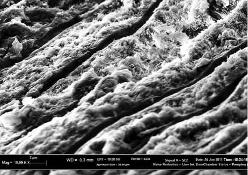
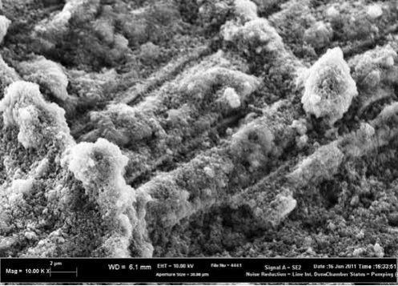
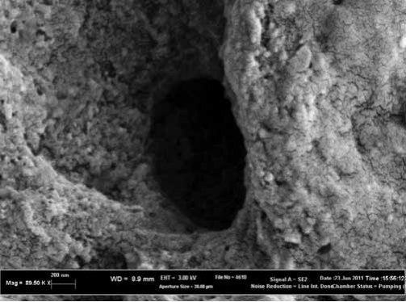
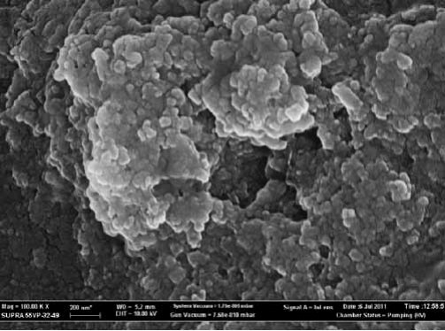
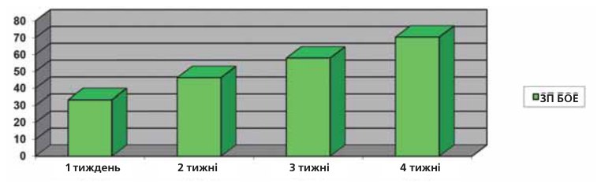

Наука · журнал «ДентАрт» 2014 №4 (77)
Боротьба з гіперчутливістю зубів у домашніх умовах
PROTECTION FROM DENTAL HYPERSENSITIVITY AT HOME
Проблема гіперчутливості зубів останнім часом набуває все більшої значущості, що пов'язане зі значним зростанням її поширеності серед населення земної кулі. Встановлено, що сьогодні у світі кожна п'ята доросла людина страждає від проявів гіперестезії зубів (Федоров Ю.А., Дрожжина В.А., 1997; Кузьміна Е.М., 2003; Ронь Г.І., 2008; та ін.). У Російській Федерації прояви підвищеної чутливості зубів зустрічаються найчастіше у віці від 30 до 59 років, причому їх поширеність сягає 62% (Кузьміна Е.М., 2003; Ронь Г.І., 2008; Орєхова Л.Ю. із співавт., 2003).
Існують різні причини виникнення і прояву підвищеної чутливості твердих тканин зубів, серед них слід відзначити: захворювання пародонту, як запальні, так і дистрофічні; карієс зубів; травми зубів, особливо ті, що супроводжуються сколом (відколом) частини коронки зуба, при якому відбувається оголення дентину; некаріозні ураження твердих тканин, що включають патологічну стертість, клиновидний дефект; демінералізацію зубів та інші причини і фактори (довкілля, вплив кислот, підвищеної вологості та ін.) (Шторіна Г.Б., 1986; Кузьміна Е.М., 2003; Ронь Г.І., 2008; Орєхова Л.Ю. із співавт., 2003; Улітовський С.Б. із співавт., 2011-2013).




Однак слід розуміти, що підвищена чутливість зубів, або гіперестезія твердих тканин зубів — це лише симптом, який проявляється при дуже багатьох патологічних станах зубощелепної системи. В останні роки найбільшого поширення набула теорія розвитку болю в дентині, яку висунув Бренстром/Brannstrom M. (1963). Ідеться про зміну руху дентинної рідини в міру стирання емалі. Після повного зникнення емалі, яка захищала дентин, відбувається розкриття дентинних канальців, що викликає пересихання чутливих волокон, котрі містяться всередині канальців, і призводить до виникнення больових відчуттів. Чим більша площа без емалі, тобто чим більша ділянка оголення дентину, тим вираженішими будуть больові відчуття, які виникають у цих зубах. Слід розуміти, що біль виникає раніше, ніж оголиться дентин. Він може з'являтися при стоншенні емалі, і чим більше стоншена емаль, тим вираженіші больові відчуття. У такій ситуації дентинні канальці закриті, але відбувається прискорення руху дентинної рідини в доцентровому напрямку, тому посилюється тиск рідини на відростки одонтобластів і виникає біль. Таким чином, чим тонший шар емалі, тим більший тиск рідини на відростки одонтобластів і тим сильніші больові відчуття.
Цей механізм виникнення больових відчуттів обумовлює і лікувально-профілактичні заходи — залежно від стану процесу:
- доки дентинні канальці ще закриті, ми рекомендуємо використовувати зубні пасти з низьким показником RDA, який не повинен бути більшим, ніж 50, тобто зі зниженою абразивністю;
- при оголенні дентину і розкритті канальців використовують зубні пасти та ополіскувачі на основі сполук калію. У цьому випадку іони калію проникають всередину дентинних канальців і обволікають відростки одонтобластів, ізолюючи їх від зовнішніх впливів, що знижує їх сприйнятливість до зовнішніх подразників. Це процес досить тривалий, і результат досягається за великий проміжок часу;
- другий механізм (також паліативний, як і попередній) — це запечатування вхідних отворів канальців. Метод ефективніший, дозволяє досягти бажаного результату за коротший час. Фактично, запечатування забезпечує відновлення внутріканальцевої циркуляції рідини, що і має наслідком усунення хворобливих відчуттів. У цьому випадку для підтримання нормального стану необхідно використовувати пасту з компонентом, що запечатує, постійно. Інакше речовина, яка запечатує, буде вимиватися з канальців і біль виникне знову.
Щоб визначити властивості зубних паст, які використовуються для боротьби з гіперчутливістю, проводяться дослідження на добровольцях, які дали інформовану згоду на участь у дослідженні.
Матеріал і методика
У клініко-лабораторних умовах провадилося вивчення трьох видів зубних паст серії Іннова Сенситив/Innova Sensitive: «Обережне освітлення емалі» (1 група), «Відновлення і здоров'я ясен» (2 група), «Інтенсивне відновлення емалі» (3 група) з метою визначення та підтвердження їх десенситивності. Для клінічної апробації зубних паст серії Іннова Сенситив/Innova Sensitive було сформовано три групи по 20 чоловік у кожній.
Зниження чутливості — тактильна і теплова проби. Ступінь вираженості гіперестезії в ділянках рецесії ясен до і в різні строки застосування пасти визначався за допомогою діагностичних проб:
- Зондування: а) оцінка тактильної чутливості за допомогою ватного тампона (ВТ); б) лінійним просуванням зонда по поверхні зуба (ЛПЗ);
- Термометрія: а) зрошення водним струменем (ВС); б) обробка прямим повітряним струменем (ППС); в) обробка бічним повітряним струменем (БПС).
Вивчення десенситивної дії і десенситивної ефективності. Індекс сенситивності зубів Л.Ю. Орєхової – С.Б. Улітовського (Індекс СЗ Орєхової-Улітовського) дозволяє простежити зміну стану зубів під впливом використовуваних десенситивних засобів.7
Вивчення електронної мікроскопії дентинних канальців. Для вивчення якості і кількості обтурації вхідних отворів дентинних канальців використовувався електронний мікроскоп Supra 55VP (Zeiss, Німеччина), за допомогою якого було проведено електронно-мікроскопічне дослідження проникнення зубної пасти всередину дентинних канальців. Зразки попередньо напилювали золотом (Au) методом катодного розпилення товщиною приблизно 10 нм. Для порівняння досліджувані об'єкти фотографували до і після нанесення зубної пасти, після чого отримані знімки порівнювали і робився розрахунок результатів.
Результати дослідження
Зміна чутливості зубів за динамікою діагностичних проб (тактильна і теплова проби). У таблиці 1 подано результати визначення зміни цифрових показників десенситивної дії у період дослідження зубних паст серії Іннова Сенситив/Innova Sensitive на підставі діагностичних проб.
| Діагностичні проби | Період обстеження | ||||||||||||||
|---|---|---|---|---|---|---|---|---|---|---|---|---|---|---|---|
| Перед початком дослідження | Через 1 тиждень | Через 2 тижні | Через 3 тижні | Через 4 тижні | |||||||||||
| 1 | 2 | 3 | 1 | 2 | 3 | 1 | 2 | 3 | 1 | 2 | 3 | 1 | 2 | 3 | |
| ЛПЗ | 3,30 | 2,70 | 3,80 | 2,60 | 2,20 | 3,10 | 2,10 | 1,80 | 2,40 | 1,60 | 1,50 | 1,80 | 1,00 | 1,10 | 1,50 |
| ВТ | 1,90 | 1,30 | 1,60 | 1,40 | 1,10 | 1,30 | 1,10 | 0,90 | 1,10 | 0,80 | 0,70 | 0,80 | 0,60 | 0,50 | 0,60 |
| ВС | 8,10 | 6,10 | 8,30 | 6,20 | 5,20 | 6,90 | 4,90 | 4,10 | 5,70 | 3,80 | 3,30 | 4,60 | 2,70 | 2,80 | 3,90 |
| БПС | 5,50 | 4,70 | 6,90 | 4,10 | 3,90 | 5,70 | 3,00 | 3,20 | 4,40 | 2,4 | 2,50 | 3,60 | 1.90 | 2,00 | 3,20 |
| ППС | 6,20 | 5,20 | 4,40 | 4,70 | 4,30 | 3,60 | 3,50 | 3,50 | 2,80 | 2,80 | 2,70 | 2,30 | 2,30 | 2,20 | 1,80 |
У таблицю 2 зведено дані визначення десенситивної ефективності використаних у період дослідження зубних паст серії Іннова Сенситив/Innova Sensitive на підставі діагностичних проб.
| Діагностичні проби | Період обстеження | ||||||||||
|---|---|---|---|---|---|---|---|---|---|---|---|
| Через 1 тиждень | Через 2 тижні | Через 3 тижні | Через 4 тижні | ||||||||
| 1 | 2 | 3 | 1 | 2 | 3 | 1 | 2 | 3 | 1 | 2 | |
| ЛПЗ | 21,21 | 18,52 | 18,42 | 36,36 | 33,33 | 36,84 | 51,51 | 44,44 | 52,63 | 69,67 | 59,26 |
| ВТ | 26,32 | 15,38 | 18,75 | 42,11 | 30,77 | 31,25 | 57,89 | 46,15 | 50,00 | 68,42 | 61,54 |
| ВС | 23,46 | 14,75 | 16,28 | 41,67 | 32,79 | 31,32 | 53,09 | 45,90 | 44,58 | 66,67 | 54,09 |
| БПС | 25,45 | 17,02 | 17,39 | 45,45 | 31,91 | 36,23 | 56,36 | 46,80 | 47,82 | 65,45 | 57,45 |
| ППС | 24,19 | 17,31 | 18,18 | 43,55 | 32,69 | 36,36 | 54,84 | 48,08 | 47,72 | 65,57 | 57,69 |
Десенситивна дія і десенситивна ефективність. У таблиці 3 подано результати визначення зміни цифрових показників десенситивної дії у період дослідження зубних паст серії Іннова Сенситив/Innova Sensitive.
| Групи | Період обстеження | ||||
|---|---|---|---|---|---|
| Початок | Через 1 тиждень | Через 2 тижні | Через 3 тижні | Через 4 тижні | |
| 1 | 60,00 | 40,00 | 32,22 | 25,25 | 17,78 |
| 2 | 50,00 | 33,33 | 27,78 | 22,22 | 17,78 |
| 3 | 55,00 | 37,78 | 30,00 | 27,78 | 20,00 |
У таблицю 4 зведені дані визначення десенситивної ефективності використаних у період дослідження зубних паст серії Іннова Сенситив/Innova Sensitive.
| Досліджувані показники | Період обстеження | |||||||||||
|---|---|---|---|---|---|---|---|---|---|---|---|---|
| Через 1 тиждень | Через 2 тижні | Через 3 тижні | Через 4 тижні | |||||||||
| 1 | 2 | 3 | 1 | 2 | 3 | 1 | 2 | 3 | 1 | 2 | 3 | |
| Десенситивна ефективність, % | 33,33 | 33,34 | 31,31 | 46,30 | 44,44 | 45,45 | 57,92 | 55,56 | 49,49 | 70,37 | 64,44 | 63,64 |
На рис. 1 подано динаміку десенситивної ефективності при використанні зубних паст серії Іннова Сенситив/Innova Sensitive за індексом сенситивності зубів Л.Ю. Орєхової – С.Б. Улітовського.

З таблиці 4 видно, що десенситивна ефективність зубних паст серії Іннова Сенситив/Іnnova Sensitive за перший тиждень становила відповідно 33,33%, 33,34%, 31,31%, а через чотири тижні вона досягла 70,37%, 64,44 %, 63,64% відповідно.
У результаті проведеного електронного мікроскопічного дослідження зубних паст серії Іннова Сенситив/Innova Sensitive було встановлено, що досліджувані зубні пасти легко проникають всередину дентинних канальців; завдяки тому, що часточки пасти достатньо дрібного розміру, вони запечатують вхідні отвори дентинних канальців діаметром від 0,2 до 4 μm. За рахунок свого малого розміру часточки пасти легко входили і досить глибоко просувалися в канальці, що забезпечувало стійке запечатування.
Висновок
Вивчення десенситивних властивостей зубних паст «Обережне освітлення емалі», «Відновлення і здоров'я ясен» та «Інтенсивне відновлення емалі» дозволило зробити висновок, що зубні пасти для чутливих зубів серії Іннова Сенситив/Innova Sensitive мають лікувально-профілактичні властивості, які проявляються в десенситивній ефективності, рівній 70,37%, 64,44%, 63,64% через 1 місяць дослідження, що характеризує їх як пасти з високим ступенем десенситивності.
Також можна зробити висновок, що поєднання клінічної апробації з електронною мікроскопією дає найбільш повноцінне уявлення про характер і механізми дії досліджуваних засобів.
Література
- Кузьмина Э.М. Повышенная чувствительность зубов. МГМСУ. М., 2003. –40 с.
- Орехова Л.Ю., Прохорова О.В., Акулович А.В., Перепеч Е.М. Оценка эффективности применения зубной пасты «Сенсодин-F» при гиперестезии твердых тканей зубов на клиническом приеме // Пародонтология. —2003. —№1. –С. 57-62.
- Ронь Г.И. Гиперестезия зубов в вопросах и ответах. Екатеринбург, 2008. –79 с.
- Улитовский С.Б., Алексеева Е.С., Васянина А.А. Решение вопросов гиперчувствительности в сложных стоматологических ситуациях // Стоматологический научно-образовательный журнал. —2013. –№1/2. –С. 12-15.
- Улитовский С.Б., Леонтьев А.А., Васянина А.А., Галибин О.В., Вилесов А.Д., Сапрыкина Н.Н., Тихомиров А.К. Клинико-лабораторные методы оценки десенситивной активности зубных паст // Стоматологическое образование и наука. —2011. –№1. –С.58-65.
- Улитовский С.Б., Феоктистова Е.В. Повышенная чувствительность зубов после препарирования/ Форум практикующих стоматологов. —2012. –№ 3 (03). –С. 56-61.
- Улитовский С.Б., Орехова Л.Ю. Определение чувствительности зубов // Пародонтология. —2008. –№ 4 (49). –С.26-29.
- Федоров Ю.А., Дрожжина В.А. Клиника, диагностика и лечение некариозных поражений зубов // Новое в стоматологии. —1977. –№10. –148 с.
- Шторина Г.Б. Клиника и лечение гиперестезии твердых тканей зуба при заболеваниях пародонта // Автореф. дисс. к. м. н. –Л. —1986. –18 с.
- Brannstrom M. A hydrodynamic mechanism in the transmission of painproduced stimuli through the dentine //In: Andersson D. (ed.). Sensory mechanisms in dentine. –Pergamon Press, London, 1963. –P. 73-79.